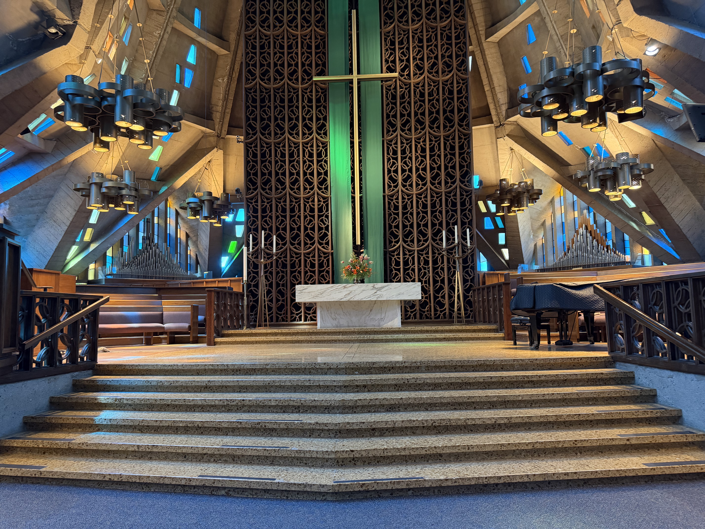

Educational Programs and Public Forums
Our foundation organizes and sponsors educational programs open to the general public including lectures and seminars, professional development workshops, and youth education programs
A home for our newly founded organization
Established in May 20, 2026
Address: 5255 Stevens Creek Blvd., #126, Santa Clara, CA
95051-6664
EIN: 42-2784705 [在此填写中文首页介绍]
=======
>
>>>>>>> site
The National Chengchi University Northern California Alumni Foundation (the "Foundation") is a California nonprofit public benefit corporation organized and operated exclusively for charitable, educational, and cultural purposes under Section 501(c)(3) of the Internal Revenue Code. The Foundation serves the public through educational programs and events, cultural exchange activities, lectures, seminars, and community outreach initiatives that benefit students, families, and the broader Northern California community. The Foundation was established by alumni of National Chengchi University (NCCU), a leading research university in Taipei, Taiwan, who reside and/or work in Northern California. The Foundation is separate from and independent of the National Chengchi University Alumni Association of Northern California, which operates as a social organization under Section 501(c)(7) of the Internal Revenue Code. Unlike the alumni association, the Foundation operates exclusively for charitable and educational public benefit purposes and does not engage in social club activities. =======
The National Chengchi University Northern California Alumni
Foundation (the "Foundation") is a California nonprofit public
benefit corporation organized and operated exclusively for
charitable, educational, and cultural purposes under Section
501(c)(3) of the Internal Revenue Code.
NCCUNCAF serves the public through educational programs and
events, cultural exchange activities, lectures, seminars, and
community outreach initiatives that benefit students, families,
and the broader Northern California community
NCCUNCAF was established on May 20, 2026 (The same day as the
NCCU's anniversary), by alumni of National Chengchi University
(NCCU), a leading university in Taipei, Taiwan, who reside
and/or work in Northern California. On August 4, 2026, the
foundation received its 501(c)(3) federal tax-exempt status.
NCCUNCAF is separate from and independent of the National
Chengchi University Alumni Association of Northern California,
which operates as a social organization under Section 501(c)(7)
of the Internal Revenue Code. Unlike the alumni association, the
Foundation operates exclusively for charitable and educational
public benefit purposes and does not engage in social club
activities.
國立政治大學北加州校友基金會（NCCUNCAF）或簡稱政大北加校友基金會，是一個加州非營利的公益組織。根據美國國稅局501(c)(3)條款設立並運營，
其宗旨為慈善、教育和文化事業。
政大北加校友基金會透過教育計畫和活動、文化交流、講座、研討會以及社區拓展活動服務大眾，惠及學生、家庭以及更廣泛的北加州社區。將政大優良傳統有系統組織地保存在海外。
政大北加校友基金會由居住和/或工作於北加州的國立政治大學（台灣一所頂尖大學）校友在2026年5月20日（與母校國立政治大學校慶同日）所創立。
本基金會於2026年8月4日取得 501(c)(3) 聯邦免試資格。
政大北加校友基金會獨立於國立政治大學北加州校友會，後者根據美國國稅局501(c)(7)條款作為社會組織運作。與校友會不同，
基金會的運作宗旨為慈善和教育文化公益事業，不參與任何社交俱樂部活動。
>>>>>>> site
The Foundation brings people together through public learning, cultural exchange, and educational support for students and the Northern California community.
Our foundation organizes and sponsors educational programs open to the general public including lectures and seminars, professional development workshops, and youth education programs
We also organize and sponsor cultural programs that promote understanding of Taiwanese and Chinese culture and foster cross-cultural with the community of Northern California. Activites include various cultural events, cultural education events, and community collaboration projects.
Additionally, our foundation also provides merit-based and need-based scholarships to provide educational assistance to students. These come in the form of annual scholarship awards and educational grants.

Jan 16, 2027, 3:00 PM 2027年1月16日
First United Methodist Church of Palo Alto First United Methodist Church of Palo Alto
Concert tickets and donations can be made here. →音樂會購票和捐款連結在此→
October or November, 2026 2026年10月或11月
TBD 待定
Event details →活動詳情 →Your support helps us invest in future programming, build local community, and provide scholarship funds. Any amount is greatly appreciated.